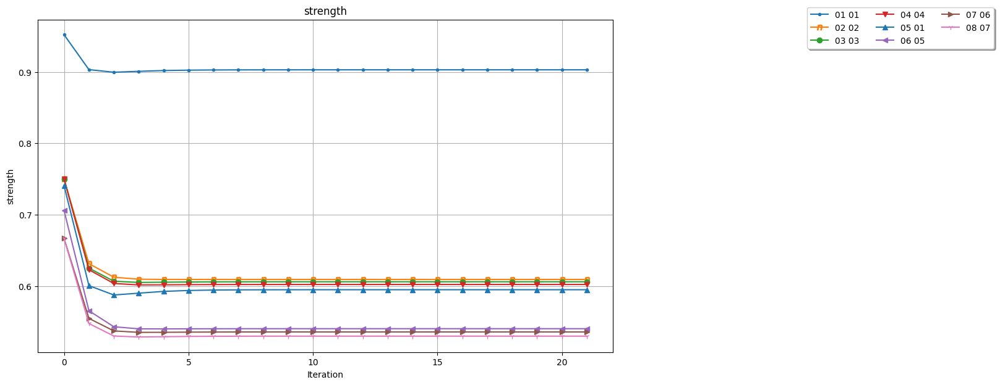
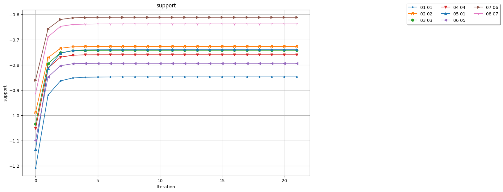

Words do not arrive here one token at a time from a giant trained language model. A prompt activates candidate dictionary entries; those candidates recursively support or inhibit one another; individual bytes and jointly supported short spans compete to produce a reproducible, inspectable string.
The current generator retains the strongest bounded candidate field, relaxes candidate strengths using definition-pattern compatibility, and samples from both byte-scale and span-scale actions. A span is eligible only when at least two relaxed candidates propose the same 4–12 bytes. That ceiling prevents the span layer from quietly becoming whole-definition retrieval.
ENTRY
SENSE
DEFINITION
WORD
SYLLABLE
PHONEME
BYTE
The typed lexical compiler retains pronunciation, heuristic syllables, part of speech, primary/secondary sense rank, definition, and WordNet synset. Sense rank, pronunciation, and sense consistency are now coupled into generation as independently switchable experimental channels.
Three real convergence tests
Every chart below comes from the same stored trajectories that generated the reported output. Strength shows each candidate hypothesis settling. Support shows net compatibility pressure; because this field is competitive, support can be negative, and less negative means less inhibition.
TEST A · INPUT: HELLO · SEED: 5
Greeting meets Hell—and Jell-O
converged · 20 iterations
VNEXPRESSIONOFGREERTTRADEMARKJELLOMADEFROM
The exact HELLO → AN EXPRESSION OF GREETING hypothesis finishes near 0.978. HULLO independently supports the same label, while multiple HELL senses remain lower competitors. Generation also reaches the Jell-O trademark neighborhood, producing a revealing collision between greeting and dessert definitions.
OPPENHEIMER and ROBERT OPPENHEIMER reinforce the same Los Alamos definition. Meanwhile, WISENHEIMER and WEISENHEIMER reinforce “an upstart who makes conceited, sardonic, insolent comments.” The result visibly combines WHO MAKES with WHO DIRECTED THE PROJECT AT LOS ALAMOS.
With one E missing, the correct Oppenheimer hypothesis still reaches about 0.903 and remains decisively ahead. Its competitors now include OPENER, OPEN AIR, MON-KHMER, and OPENING MOVE: a useful view of both approximate matching and relevance drift.

Candidate strength by iteration

Net compatibility support by iteration
The whole observatory
The six charts together show a common signature: most rearrangement happens within the first three to five iterations; the later iterations certify convergence without changing the broad ranking.
Inspectable strengths, supports, spans, voters, and definitions.
A typed WordNet + CMU pronunciation compiler.
Not claimed
This is not yet a general chatbot.
English coherence does not guarantee prompt relevance.
Duplicate definitions can make preservation unusually strong.
Typed channels are experimental and remain disabled by default.
The experiments do not establish human-level semantics.
Typed channels: the frozen ablation
Seven fixed prompt/seed cases were run in five modes: baseline, sense-rank weighting, pronunciation compatibility, neighboring-sense consistency, and all three together. All 35 runs converged.
mode
word coverage
pronounceable
definition 4-gram
sense switches
span coverage
mean iterations
baseline
0.538
0.468
0.407
0.193
0.673
21.429
sense rank
0.490
0.432
0.263
0.189
0.625
21.143
pronunciation
0.561
0.492
0.402
0.206
0.677
21.429
sense consistency
0.502
0.465
0.415
0.191
0.662
22.571
all channels
0.438
0.453
0.275
0.258
0.639
22.143
Pronunciation is the useful optional channel: it raised mean word coverage by 0.023 and pronounceable coverage by 0.024. Turning everything on was worse than baseline, so baseline remains the default.
The negative result is informative. Sense-rank weighting correctly demoted the secondary PLUM sense “completely,” but WordNet also contains the same meaning as the primary sense of PLUMB. The unwanted phrase therefore survived. The missing constraint is cross-headword relevance, not stronger rank tuning. These seven cases are a frozen engineering probe, not a statistical significance claim.
Plotting lineage
The strength/support charts are generated through Ian Gray’s original PlotStrengthSupport class, written in a Google Colab notebook and later preserved in the relaxation-labeling repository. The adapter loads Ian’s class verbatim while omitting only the Colab Drive mount and hard-coded demonstration calls. Manny Glover helped bring the original plotting work to completion and connected it here to the current WikiMRGRELE trajectories.
The WordNet package and CMU pronunciation dictionary remain external local data dependencies; downloaded dictionary files are deliberately excluded from Git. Source, tests, plot adapter, manifests, CSV trajectories, and generated chart artifacts are public.